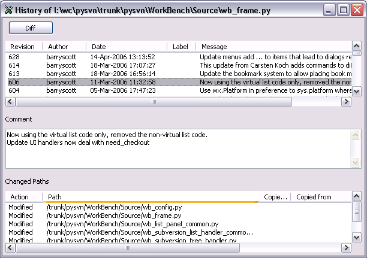
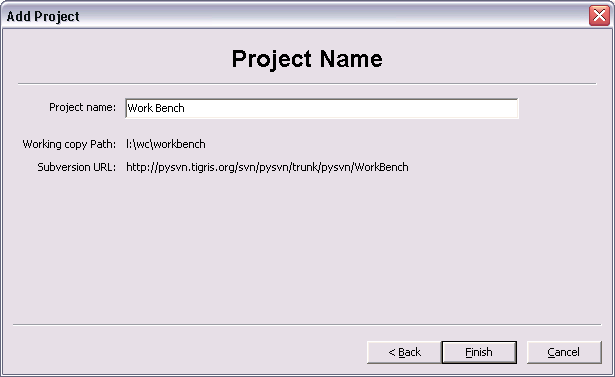

This documentation is for Work Bench V1.4.0.
WorkBench requires you to create a Project for each of the subversion working copy that you wish to work on.
From the Project menu select Add... to start the Add Project Wizard.
After the Add project wizard has setup a new project for you checkout the sources.
Select the project on the tree control and then select the menu Actions Checkout.
The Action menu will list all the commands that apply to the selected item in the tree control or the list control. You can also Right-Click (Ctrl-Click on the Mac) to get a pop-up menu.
The WorkBench windows is split into three main areas. The top area is like a file and folder explorer.
Use the left hand tree control to change between projects and folders and use the right hand list control to work with files. You can change the information shown using the View menu. The number of columns and order of columns in the list can be changed in the Preferences.
The bottom panel is used to show messages. In the example below the result of an Update.
Use the toolbar to access frequently used commands.
The status bar will show the progress of long running operations like checkin and update commands.
The filename filter is used to focus in on a few files. Choose Name to filter on filenames and choose Author to filter on author's name. Type a part of the name into the text box to show only files that contain what you type in the name.
Click the X button to clear the filter string and show all files.
WorkBench can optionally add the names of TAGs to the history command output.
Note: WorkBench uses the revision of the TAG to work out where in the history list the TAG should be shown. This works very well if TAGs are created from the HEAD of trunk.
All of the menu items in WorkBench are described below. Click on the menu item to scroll to its description.
| File | Edit | View | Actions | Reports | Bookmarks | Project | Help |
Enter the path to the editor program you want to use in the "Editor:" text box. The Browse button pops up a file picker dialog to help locate the editor program.
Any command line arguments can be entered in the "Editor Arguments:" text box.
Choose the "Terminal Program" you wish to use for the Command Shell command. The available choices depend on your operating system:
The optional "Terminal Init Command" will be run each time a new Command Shell is created.
Choose the "File Browser Program" you wish to use for the File Browser command. The available choices depend on your operating system:
The list on the right shows the columns that will be shown. The list on the left shows the available columns.
Use the "Include -->" and "<-- Exclude" buttons to include and exclude the selected column.Select a column name then use the "Move Up" and "Move Down" buttons to rearrange the order of the columns in the right hand list.
The width of each column can be set by selecting the column name in the right hand list and then type the width, in characters, into the text box in the middle and press ENTER to complete the change.
Quit WorkBench
Using the Copy, Cut and Paste commands you can copy or move files and folders. Normally subversion will not allow you to copy of move Added or Modified files, but WorkBench does know how to correctly copy and move Added and Modified files.
Copy the selected folder or files in prepation for using paste to make a copy.
Cut the selected folder or files in prepation for using paste to move the files.
Select a destination folder and use paste to copy files that where selected with the Copy command. If you paste a file into a folder that already has a file with the same name you will be prompted for a new name to use.
Select a destination folder and use paste to move files that where selected with the Cut command. If you paste a file into a folder that already has a file with the same name you will be prompted for a new name to use.
Clear the log messages windows.
Show Controlled files, files that are under the control of subversion, in the list panel.
Show Uncontrolled files, files that are not under the control of subversion, in the list panel.
Show Ignored files, files that subversion noramally ignores, in the list panel. Ignored files are configured in the subversion config file.
Show files in sub-folders as well as the currently selected folder.
Warning: It can take a long time for WorkBench to get all the information about a large number of files from Subversion.
Refresh the tree and list panels with the current state of files.
Normally WorkBench will automatically refresh the tree and list panels. Turn off automatic refresh if you find that refreshing is very slow. This can happen if you have a large number of shown in the list panel.
Start a command shell which has the selected folder as its current working directory.
The Preferences allow you to customise how the Command Shell command works.
Start a file browser at the selected folder.
The Preferences allow you to customise how the File Browser command works.
Edit the selected file using the editor configured in the Preferences.
Open the selected file using the stanard operating system method (Windows and Mac OS X only).
Show the differences between the selected files and the checked out BASE version. In other words show the work you have done.
The differences windows shows changed lines and changes within a line.
By default the diff window has collapsed the folds to hide unmodified text.
Use the + and - buttons to toggle the collapsing.
The a.b button toggles the showing of white-space. Useful when looking for changes in TAB and SPACE characters.
The up and down arrow buttons move you backwards and forwards through each change in the diff window.
Show the differences between the selected files and the current version in the repository. In other words show the work other people have checked in against your version.
Show the differences between the selected files and their versions at the point this branch was made.
In other words show the work that has been done in this branch.
An error message is displayed if the active project is not associated with a branch.
Show the differences between the selected files and their latest versions in the main line of development this branch was copied from.
An error message is displayed if the active project is not associated with a branch.
The Conflict menu items help you work with a file has conflicts between your edits and the version updated from the repository.
Diff between the Old version of the file and your current working copy version.
Diff between your current working copy version and the New version of the file.
Diff between the Old version of the file and the New version of the file.
Tell Subversion that you have resolved the conflict.
Show an annotated listing of the selected file showing the origin of each line in the file. For each line the author, date and revision is listed.
Use this command to discover when a line of interest was introduced into a file.
List the log history of the selected files or folder. You can choose to show all the log messages, the last few messages or the messages since a particular date.
The Log History window shows an abbreviated listing of all the log messages. Select a log message to display the full log message and the changed paths.

By selecting a single revision you can click the Diff button to view the differences between your copy of the file and the choosen revision.
By selecting two revisions you can click the Diff button to view the differences between the pair of selected revisitions.
Show information about the selected files or folder. The information about the entry, any lock held and working copy details.
Show the Subversion properties of the selected files or folder.
In the dialog box you can change the properties. The known Subversion properties are all listed and any user defined. Change the check boxes to add or remove a property. Fill in the bottom pair of text boxes to define your own property and value.
In the example above a user defined proptery named "foo" has been added with the value "bar".
Update the selected files or folder from the Subversion repository. The update will proceed in the background allowing you to do something else in Work Bench.
The status bar will show the progress of the update.
Checkout files and folders from the repository to populate the working copy.
Search the selected files or folder for changes to checkin and display the results in a Checkin Window.
This is the same Checkin window is described that the Report Changes command creates.
Take out a lock against the selected files. The dialog box allows a lock comment to be entered. If the lock is already held by another user and you wish to override the other users lock check the Force option.
Revoke a lock against the selected files. The dialog box allows you to confirm that you wish to unlock the file. You can unlock a file that is locked by another user by checking the Force option.
Pop up a dialog that allows you to name a new file and choose a template to initialised it from.
The new file is scheduler for addition to the repository.
Pop up a dialog that allows you to name a new directory.
The new directory is scheduler for addition to the repository.
Schedule the selected files or folder to be added to the repository.
When adding a folder a dialog pops up that allows you to set the force option. Use force to override some of the checks Subversion makes and allow the addition to proceed.
The Rename command can work on controlled and uncontrolled files.
Pop up a dialog that allows you to change the name of the selected files and folders.
Work Bench can rename controlled files that have been added or modified.
The Delete command can work on controlled and uncontrolled files.
Uncontrolled files are deleted. Controlled files are scheduled for deletion for the repository.
A dialog pops up to confirm the deletion.
The Revert command allows you to undo additions and modification to files.
Added files are left as uncontrolled files. Edits to modified files are lost after a Revert.
A dialog pops up to confirm the revertion.
If Work Bench or a Subversion command did not complete it is possible to leave the working copy in a locked state (state L).
Use the Clean Up command to clean up the working copy, removing locks and resuming unfinished operations.
Create a tag of the current folder in the project's tags folder.
The tags folder can be configured via the Projects menu Update project... dialog.
Create a branch of the current folder in the project's branches folder.
The branches folder can be configured via the Projects menu Update project... dialog.
Search the selected Working Copy folder and all its sub-folders for locks and display any found in a new window.
The Working Copy Lock Report window allows you to Lock and Unlock the files as well as a set of other useful commands. Use the toolbar buttons or Context-Menu to access commands.
Search the selected folder and all its sub-folders in the repository for locks and display any found in a new window.
The Repository Lock Report window allows you to Lock and Unlock the files as well as a set of other useful commands. Use the toolbar buttons or Context-Menu to access commands.
Search the selected Working Copy folder and all its sub-folders for changes and display any found in a new window.
The Check in window allows you to Check in the changes found to the repository.
You can also use commands from this window like Diff, Properties, Annotate and Log History to confirm that the changes are as you expect and help you write a suitable log message.
Work Bench remembers the last log message you entered and can insert it for you when you click the Insert Last Message button.
Use the exclude button to exclude a file from being checked in. Use the include button to reverse an exclusion.
Search the selected folder and all its sub-folders in the repository for changes and display any found in a new window.
By using the exclude and include buttons you can update a subset of the available changes.
Creates a list of all changes in and below the current folder that were made in the current branch.
An error message is displayed if the active project is not associated with a branch or if no
changes were made to that branch in or below the current folder.
Add the currently selected folder to the book marks.
Use Bookmarks » Manage to edit the properties of the book marks.
Pop up a dialog that allows you to edit the properties of any bookmark.
The dialog lists the book marks in the same order that they will be displayed in the Bookmarks menu.
Select a book mark and click the Properties button to edit the properties.
You can change the name of the bookmark and put it into a folder (sub-menu).
Your book marks appear here at the bottom of the Bookmarks menu.
The Add Project wizard guides you to add an existing working copy to Work Bench or create a new working copy.
To use a existing working copy click the corresponding radio button and click Next.
Enter the path to the working copy. Use the Browse button to choose using a folder picker dialog.
The repository URL will be shown when you have entered the path to a working copy.
Click Next to proceed.
Enter the name that you want Work Bench to use for this project.
Click Finish to complete adding the project.
To create a new working copy click the corresponding radio button and click Next.
Enter the URL of the Subversion repository. The URL is typically publish by the Subversion repository administrators.
You may be prompted for any username and password required to access the repository.
Enter the path of the new working copy. Use the Browse button to choose using a folder picker dialog.
Click Next to proceed.
Enter the name that you want Work Bench to use for this project.
Click Finish to complete adding the project.

Pop up a dialog to confirm the deletion of the selected project.
This does not delete the working copy files, it only removes the project from Work Bench.
Pop up a dialog that shows the version of WorkBench, Subversion, wxPython and Python.